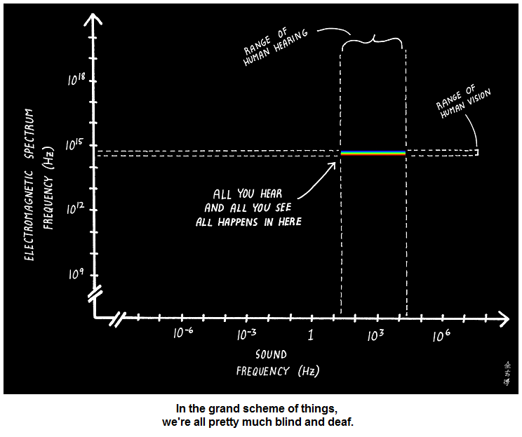

1 Why computational modeling?
The field of psychology is full of theories. But this book is focused on a specific type of theory: the type that can be formalized as a computational model.
What advantage does a computational (or mathematical) theory have over one that can’t be expressed in computational terms? The biggest advantage is precision. For example, suppose you say that attention is like a spotlight 🔦: we can attend to things that are currently within the light, and we can control where the light is shining, but things outside of the light are outside of our awareness. This is a kind of theory – an analogy-based one – and it’s a good start for making some general qualitative predictions about how attention works.
But you’ll quickly run into problems if you want to make precise quantitative predictions about attention. How big is the spotlight? Does the size expand and contract? How quickly does it move around? Is attention completely absent outside of the spotlight or does it ramp down as you get near the edge of the light? In other words, if you wanted to build a computer model of this theory, a simple analogy doesn’t cut it.
Computational models force us to be explicit about our assumptions.
1.1 Representations 🔸
We don’t perceive the world as it truly is. As one example, the visible spectrum that our eyes can detect is just a fraction of the full electromagnetic spectrum. Similarly, we can only hear a narrow range of sound frequencies. In other words, we perceive an incomplete picture of the world.

Even for the parts of the world that we can perceive, the information we get through our senses is often incomplete, so we are constantly making assumptions to fill in gaps.
As a result, what we have in our heads is a kind of model of the world around us – what cognitive scientists call a mental representation. These representations help us to reach rapid conclusions about things involving language, causes and effects, concepts, mental states, and many other aspects of cognition.
Some of the key questions for cognitive scientists who use computational models are:
- What mental representations do we rely on?
- How do our minds use these representations to learn when we get new information?
- What kind of information do we get and how do our expectations about the kind of information we’re getting to affect how we use it?
This book focuses on each of these questions.
1.2 Homework 1: Build your first computational model 💻

To get some initial experience with computational modeling, you’ll build and experiment with a simple model of classical conditioning developed by Robert Rescorla and Allan Wagner – now called the Rescorla-Wagner model.
All homework assignments for this book will be done in Google Colab. Click the button at the top of this section to view Homework 1.
You’ll have to make a copy of the notebook saved to your own Drive in order to edit it.
If you’re unfamiliar with Colab (or Jupyter Notebooks), watch this brief introduction video.
This video gives some extra tips for working with Colab.